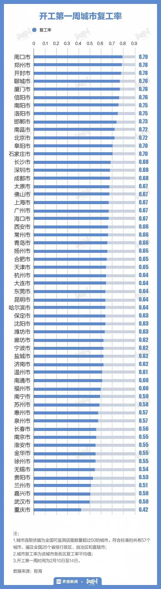
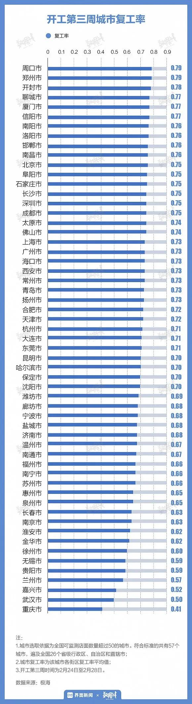
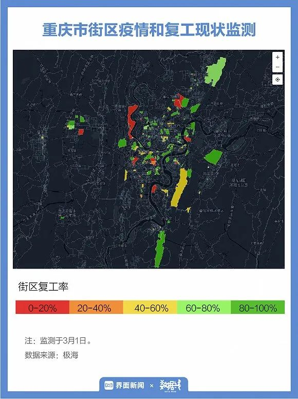
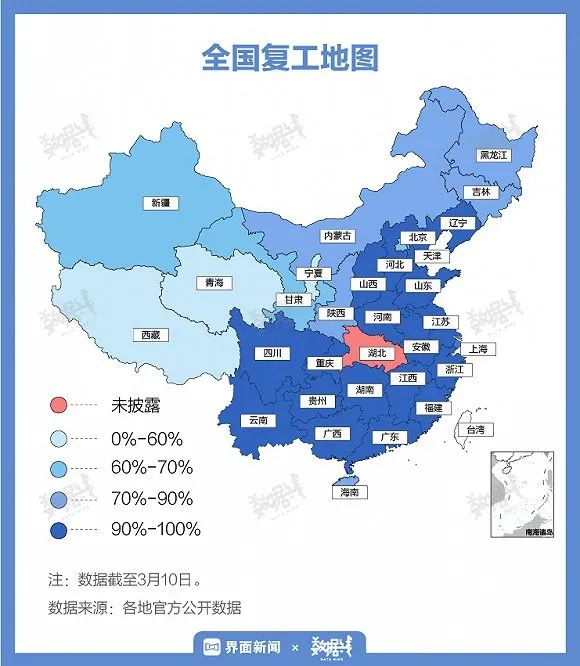

27城数据告诉你，复工第一周多少人在坐地铁
原文链接 备份链接 地铁北京南站，拍摄：蔡星卓 记者：唐俊 “ 绝大部分城市地铁客流不足去年同期10%。 ” 受疫情影响，今年春运没有返程高峰。从1月29日开始，全国铁路、民航、公路客流同比降幅一直超过80%。虽然政策已经允许复工，但实际 …
记者：李胤烽 初彦墨 编辑：陈臣
“
在复工这件事上，河南依旧“硬核”，开工第一周其6个城市复工率均超过75%。开工前三周，重庆最“保守”，西安出现退步。
”
随着新冠肺炎疫情防控形势积极向好，全国各地复工复产正有序开展。从开始复工到现在，全国各省区市都交出了怎样的答卷？
2月10日，多地迎来复工第一周。据极海数据，在全国可监测店面数量超过50的57座城市中，第一周的平均复工率为63.9%，13个城市的复工率超过70%。
在复工这件事上，河南依旧很“硬核”。开工第一周，河南省的6个城市（周口、郑州、开封、信阳、洛阳、南阳）全部位于前八名，复工率均超过75%。而重庆则是在第一周唯一一个复工率不足50%的城市。

当复工进行至第三周，57个城市的平均复工率为69.2%，与第一周相比上升了5.3个百分点。河南部分城市依旧保持领先，江浙城市开始发力。
开工第三周，重庆依旧以41%的复工率垫底，复工节奏较为保守。

根据极海3月1日的复工监测地图，“网红城市”重庆目前有较多的街区复工率低于40%，拉低了整体城市的复工率。
从品牌来看，截至3月1日，重庆共有30家麦当劳，其中正常营业10家，复工率33.3%；183家瑞幸咖啡，正常营业36家，复工率19.7%；COCO奶茶共74家门店，仅有5家门店正常营业。

极海数据显示，从开工第一周到第三周，兰州“复工加速度”最快，其复工率环比增长率在三周内提升了超过40%。起跑最积极的河南，其6个城市的复工增长率均低于1%。
而西安则在复工率上出现了退步，复工率从第一周的66%降至第三周的50%。

从复工监测地图上看，截至3月1日，西安大部分街区的商场、街边店等商业场所营业率较低。

随着中国各地多举措助力，企业复工复产不断加速。2020年第一季度证券基金行业首席经济学家例会上专家指出，各地复工复产率正逐步提升，目前接近60%-70%，预计3月底能达90%以上。

未经授权 禁止转载

原文链接 备份链接 地铁北京南站，拍摄：蔡星卓 记者：唐俊 “ 绝大部分城市地铁客流不足去年同期10%。 ” 受疫情影响，今年春运没有返程高峰。从1月29日开始，全国铁路、民航、公路客流同比降幅一直超过80%。虽然政策已经允许复工，但实际 …
原文链接 备份链接 燃财经（ID:rancaijing）原创 作者 | 孟亚娜 编辑 | 凌远川 坐电梯像“吃火锅”，吃饭像“参加高考”，红外线测体温，脚踏式按键开门神器……近日，互联网公司的花式复工火了，网友大呼，太硬核了。 图片来源 …
原文链接 备份链接 以下文章来源于我是南七道 ，作者南七道 疫情，让老蔡这样的小微型企业措手不及。而开工之路，更是遥不可及 *******文｜ 南七道******* 广东随处可见的小工厂（南七道2019年摄） 受疫情影响，最近包括 …
原文链接 备份链接 当下，在有效防控疫情的同时，需要发挥城市和区域间的协调与合作，防止因各自为战，造成非重点疫区复工复业的困难，影响经济和社会的稳定发展，以及人民生活的安定 文 | 李铁 从1月23日武汉封城以来，除了重点疫区，绝大部分城 …
原文链接 备份链接 以下文章来源于AI财经社 ，作者AI财经社作者 开工前最忧伤的段子可能是，“今天戴着口罩去买口罩，口罩没买到，还损失了一个口罩。” 2月10日起，部分企业陆续复工，宅在家里即为国家做贡献的使命宣告终结。当下的主要矛 …